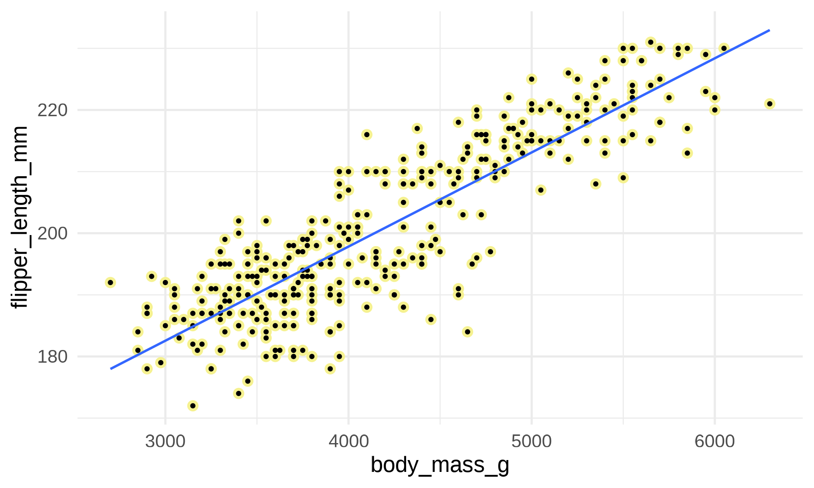
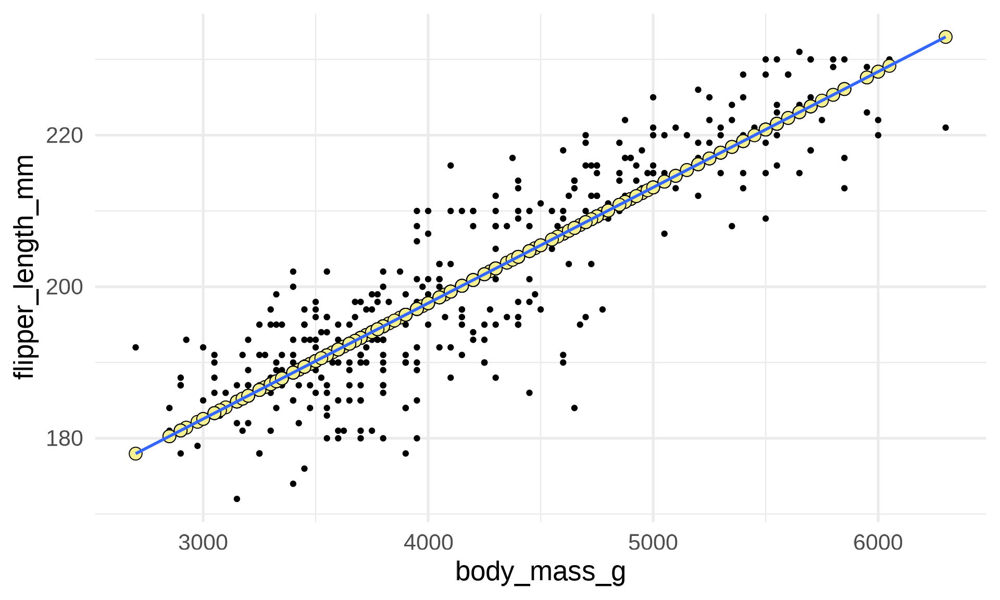
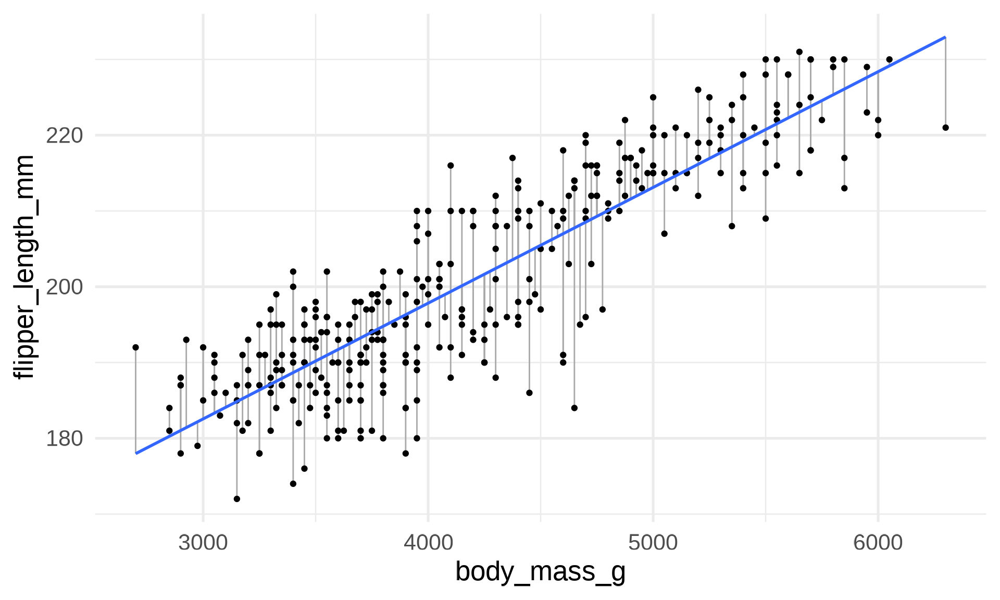
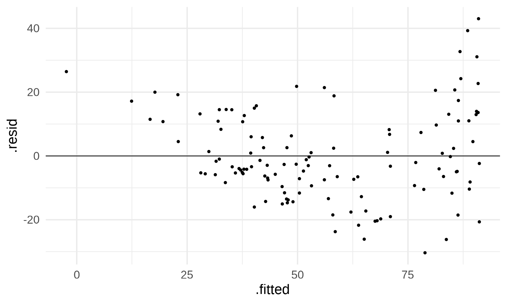

Call:
lm(formula = flipper_length_mm ~ body_mass_g, data = penguins)
Coefficients:
(Intercept) body_mass_g
136.72956 0.01528 Stat120 | Fall 2025
Call:
lm(formula = flipper_length_mm ~ body_mass_g, data = penguins)
Coefficients:
(Intercept) body_mass_g
136.72956 0.01528 Intercept (\(b_0\)): where does the line cross the y-axis? What is the prediction for \(x=0\)?
Slope (\(b_1\)): For a 1-unit increase in \(x\), what is the change in the prediction for \(y\)?
Observations (\(y_i\)): the data points that were observed
Predictions (\(\hat{y}_i\)): the points on the line for each \(x\) value
\[\hat{y}_i = b_0 + b_1 x_i\]
Residuals (\(\epsilon_i\)): difference between observations and predictions
\[\epsilon_i = y_i - \hat{y}_i \]
Recall the least squares equation in this case was \[ \operatorname{\widehat{flipper\_length\_mm}} = 136.73 + 0.015(\operatorname{body\_mass\_g}) \]
I grab a penguin with a flipper length of 193mm and a body mass of 3475g. What is the observation, prediction, and residual in this case?
penguin_dives dataset.Emperor penguins routinely make dives of 5-12 minutes, with the longest recorded dive over 27 minutes (!!) The rate of oxygen depletion is primarily determined by the penguin’s heart rate. Consequently, studies of heart rates during dives can help us understand how these animals regulate their oxygen consumption in order to make such impressive dives.
DiveHeartRate is the bird’s heart rate in beats per minute, Depth is the depth of the dive (in meters), Duration is the duration of the dive in minutes, and Bird is an ID variable indicating which penguin made the dive.
# A tibble: 125 × 4
DiveHeartRate Depth Duration Bird
<dbl> <dbl> <dbl> <chr>
1 88.8 5 1.05 EP19
2 103. 9 1.18 EP19
3 97.4 22 1.92 EP19
4 85.3 25.5 3.47 EP19
5 60.6 30.5 7.08 EP19
6 77.6 32.5 4.77 EP19
7 44.3 38 9.13 EP19
8 32.8 32 11 EP19
9 94.2 6 1.32 EP19
10 99.8 10.5 1.48 EP19
# ℹ 115 more rowsTo make sure that we’re working with a linear relationship, it’s best practice to make a residual plot alongside the X-Y scatterplot when checking for curvature.
Step 1: Fit model and save it to an object
Step 2: Create augmented dataset. This creates a dataset which contains the original response and explanatory variables, a column with the residuals (.resid), a column with the predictions (.fitted), along with other quantities you’ll see in future stats courses. augment() lives in the broom library, which we need to remember to load.
# A tibble: 125 × 8
DiveHeartRate Duration .fitted .resid .hat .sigma .cooksd .std.resid
<dbl> <dbl> <dbl> <dbl> <dbl> <dbl> <dbl> <dbl>
1 88.8 1.05 91.2 -2.36 0.0270 14.2 0.000400 -0.170
2 103. 1.18 90.4 13.0 0.0262 14.1 0.0117 0.931
3 97.4 1.92 86.4 11.0 0.0221 14.1 0.00700 0.787
4 85.3 3.47 77.9 7.35 0.0152 14.2 0.00212 0.525
5 60.6 7.08 58.2 2.43 0.00803 14.2 0.000121 0.173
6 77.6 4.77 70.8 6.76 0.0111 14.2 0.00131 0.482
7 44.3 9.13 47.0 -2.66 0.00961 14.2 0.000174 -0.189
8 32.8 11 36.8 -3.95 0.0146 14.2 0.000590 -0.282
9 94.2 1.32 89.7 4.50 0.0255 14.2 0.00136 0.323
10 99.8 1.48 88.8 11.0 0.0245 14.1 0.00783 0.790
# ℹ 115 more rowsStep 3. Create the scatterplot using the augmented dataset

If you notice lots of skew, start by transforming that variable
Below is the slope and intercept for the transformed model. Write out the linear regression equation and provide an in-context interpretation of the intercept and slope
Call:
lm(formula = recip_DHR ~ Duration, data = penguin_dives)
Coefficients:
(Intercept) Duration
-0.007926 -0.001817 For a dive with duration 0, we expect the average reciprocal of DiveHeartRate to be -.0079
For every 1-minute increase in dive Duration, we expect the average reciprocal of DiveHeartRate to be .0018 BPM lower.
It’s also best practice to make the new residual plot
Since it looks more “like a cloud” without clear curvature, we should be safe to use our linear regression model for predictions.